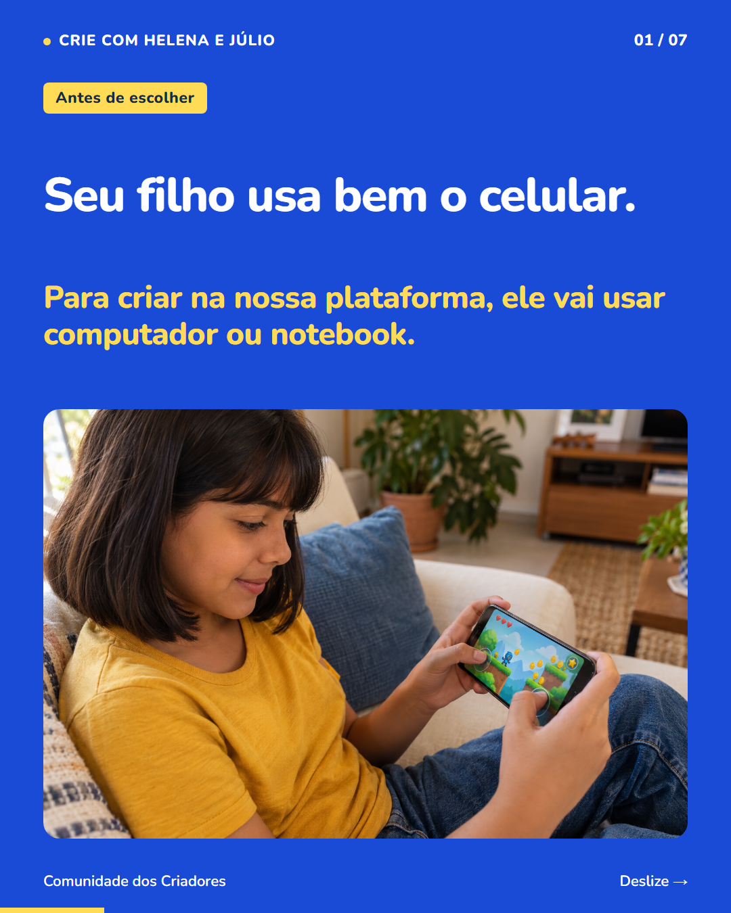
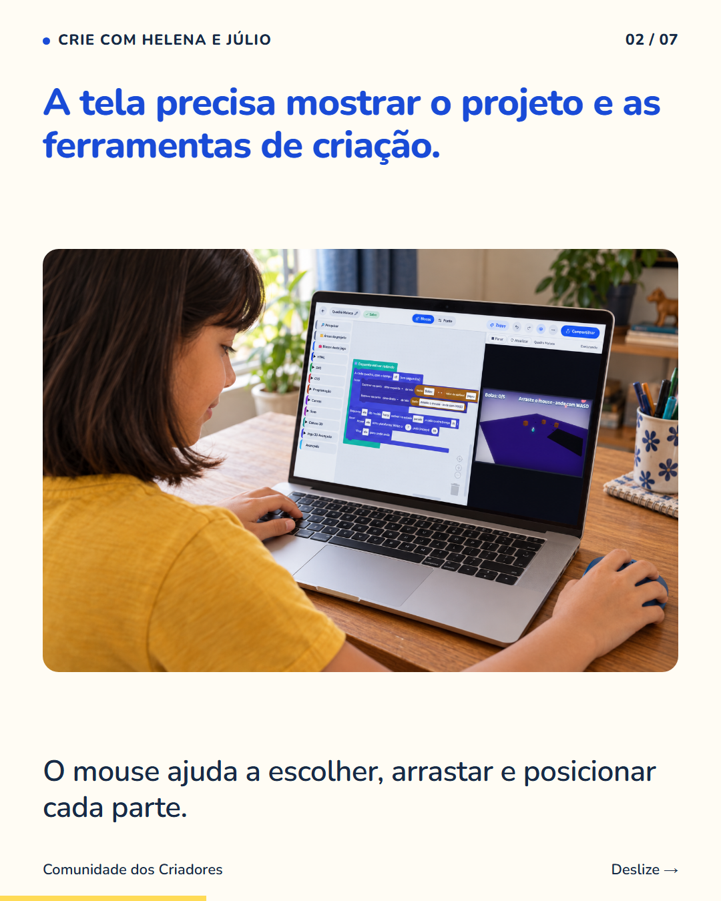
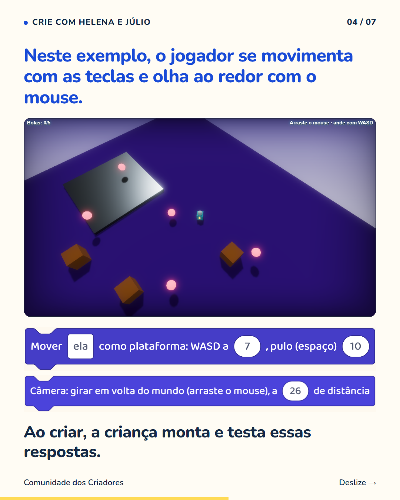

7 slides · 1080 × 1350 · Copy revisada · Computador, mouse e teclado na criação de jogos



Vale conferir o aparelho antes de escolher uma atividade de criação de jogos. Na nossa plataforma, a criança usa computador ou notebook com internet, mouse e teclado. Ela precisa enxergar as ferramentas, mover partes do projeto e testar o que criou. O celular não substitui esse equipamento nas nossas atividades. Se já existe um computador em casa, comece conferindo se ele atende ao uso da plataforma. Pense também na disponibilidade: se outras pessoas usam o aparelho, combinar horários ajuda a criança a ter espaço para estudar. Siga o perfil para entender o que preparar e o que seu filho pode fazer ao criar jogos.